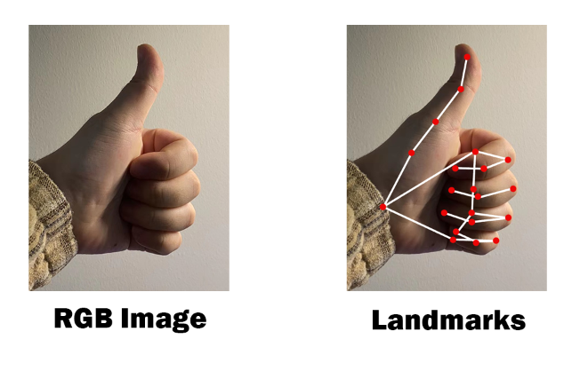
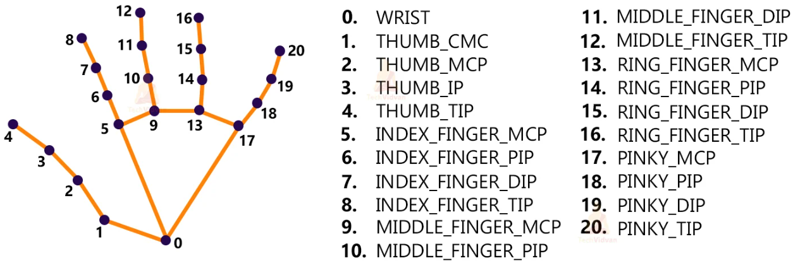
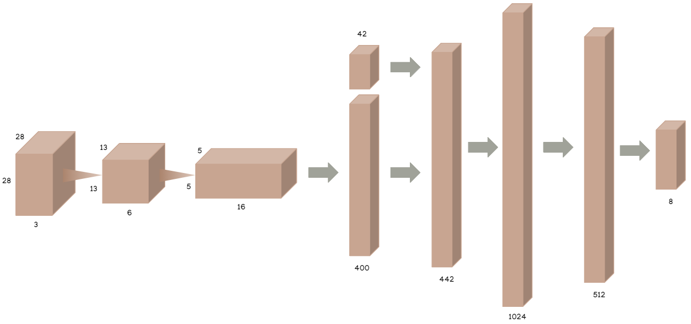
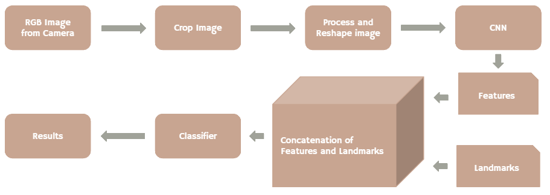
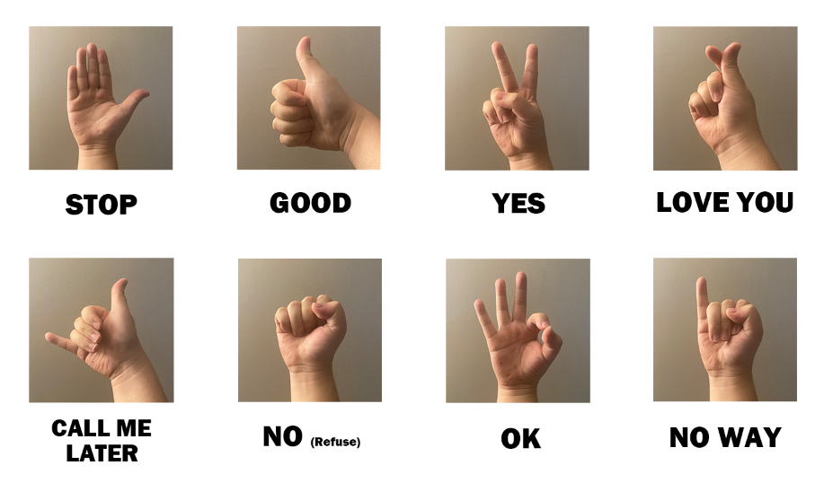
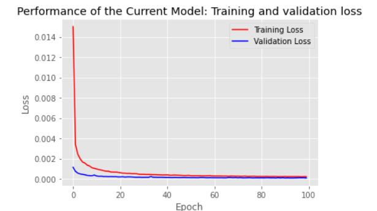
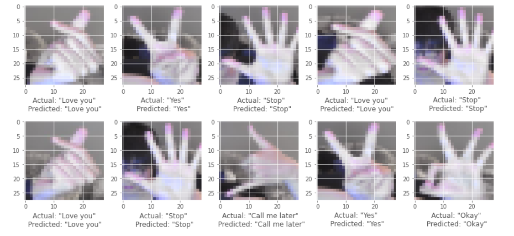

Various Hand Gestures
and Motion Recognition
Deep Learning Final Project
Whiting School of Engineering @ Johns Hopkins University
Group Memebers
Zhijing Hu, Zhikun Gan, Yifei Che
Why hand gesture recognition?
Hand gesture recognition is a trending topic in the field of computer vision and pattern recognition. Although great progress has been made recently, fast and robust Real-time recognition of hand gestures remains a challenging task since the existing methods have not presented a practical compromise between the performance and the efficiency. In the past, people need to use remote controls and joysticks as controlling device for many HCI. A hand-gesture-based interface provides higher flexibility while also being user-friendly because the user could convey their messages or perform their task only showing his hand in front of the camera.
About our project
The main aim of our project is to classify and recognize the hand gestures. HGR is a technique in which we use different algorithms and concepts of various techniques, such as image processing and neural networks, to understand the gesture or movement of the hand. MediaPipe framework, with profound open-source libraries involving Tensorflow in OpenCV, CV2 and PyTorch, would be our main tools for utilization.

MediaPipe is a Framework for building machine learning pipelines for processing time-series data like video, audio, etc. Through MediaPipe, hand with its corresponding key points could be recognized. MediaPipe returns a total of 21 key points for each detected hand. The maximum number of hand in the live/recorded video, or images could be adjusted with different needs. These key points will be fed into a pre-trained gesture recognizer network to recognize the hand pose.

At the first stage of our project, we built a convolutional neural network for classifying the Sign Language MNIST dataset, which consists of over 2,7000 training samples and 7000 test samples and covers 24 different classes of hand gestures. Our CNN consists of 2 convolutional layers and 2 fully connected layer. Although the CNN seems shallow and simple, considering the small size of the input image, which is 28*28, the size is adequate and it achieved a test accuracy of 97.6 %. One obvious advantage of small network is its response speed. Therefore, this stage of our project proved that with proper image pre-processing techniques, our project are capable of achieving real-time response with satisfying classification accuracy.
Here is our model architecture used for our own dataset.

With only the neural network, we are limited to pre-processed images with fixed size and style. However, our goal is to build a more generalized project that can be used in real-world environments. The next stage of our project aims in solving this generalization problem. First of all, we are only concerned about the hand gesture, so that we used the open source MediaPipe Hands to extract the landmarks of the detected hands. If we implement the classifier based only on the landmarks, the information will be restricted and it will significantly limit the ability of generalization of our project, for example, it cannot distinguish the orientation of the hands nor the variations in left and right hands. To address this issue, we extracted the part of the image which contains the hand, then perform classification based on both the cropped image and the landmarks. We came up an object extraction method based on the landmarks, where we crop out the images around the landmark positions, then various image pre-processing methods were performed on the cropped images, including image resizing and intensity normalization, to make it fit with our CNN. After the images being pre-processed, we pass it to our CNN for feature extraction, then before entering the classifier, the flattened features are concatenated with the landmarks, so that both extracted features and the landmarks will contribute to the classification.
The complete process of our method is shown in the flow chart below.

We firstly test our model using the Sign Language MNIST Dataset from Kaggle. Although the existing dataset are large, it only focuses on analyzing the RGB images. Comparing to adding landmarks to user's hand, it lacks of the good accuracy and quick response speed on the interface in the live or recorded video. Moreover, over 20 gestures are difficult for every user to memorize and performance.
Dataset
Instead of making every single gesture conveys a single English letter, we started to build our own gestures dataset making a single gesture in a more convenient way, which could be read or translated into a English phase or sentence, such as "Gimme a second", "Call me later", etc..
There has 8 static hand gestures are created with different sign meanings in total, including "Stop", "Good", "Yes", "Love you", "No way", "Okay", "Gimme a second", "Call me later". What we put in the first place is creating our own training dataset, collecting RGB images through RGB camera connected to the computer, with their corresponding hand landmarks at the same time. The samples contain both left hand and right hand with clear and correct gestures performed. Over 1,000 pictures of samples are collected for each gesture. For test dataset, it is much smaller than the training one. Only 200 pictures are collected in total from different group members under different test environment.

Results
The models are trained on the 8,000+ training images for both RGB images and landmark images, and later evaluated on the 1,000+ validation images, respectively. After testing on different trails training our model with different learning rates and epoch numbers, the performance of the model is achieving a satisfying value both in training loss and validation loss with 100 epoch numbers. The training loss and validation loss are drawn in red curve and blue curve, respectively.

The overall test accuracy is successfully achieving to 99.6% with real-time speed of 60 (± 20) fps feedback interface, varying with different hardware. Also, here is the outcomes of the predicted gestures with actual after training the model. 10 examples of prediction results in total are displayed below.

Due to the limitation on time and resources, we only achieved the method of static hand gesture recognition. Our future goals are, firstly, enlarging our existing dataset by collecting the gesture images and landmarks performed by more users, as well as more hand gestures. Next, it is considered to collect negative samples, the blurred or not fully performed gestures, for weak classifiers according to the feature values generated for now. Moreover, dynamic hand gesture recognition (hand motions recognition) will be considered to study and work on.
To know more about the details, please check my GitHub page of this project: Various Hand Gestures Recognition.